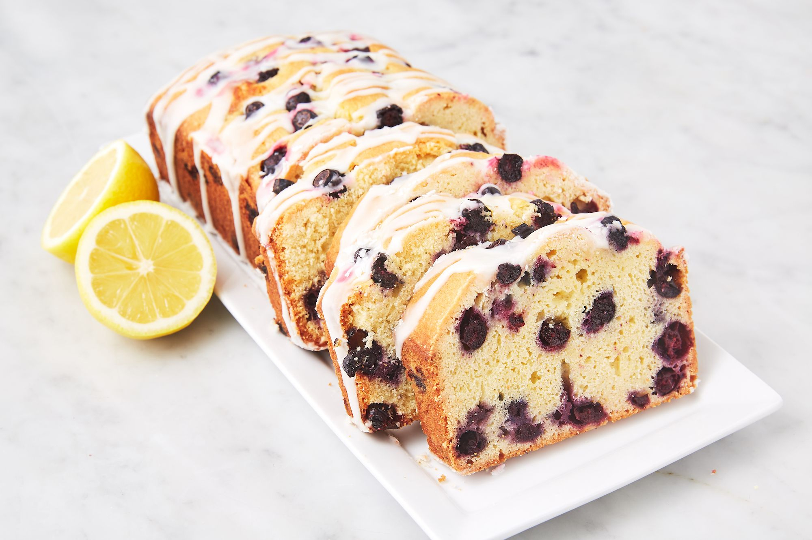

1. Enfarinhar os mirtilos com 1 colher de trigo2. Em outro pote, juntar o leite, as raspas e o suco de limão e a baunilha3. No terceiro pote, juntar a manteiga e o açúcare mexer ate encorporar.4. Acrescentar os ovos na massa, um de cada vez.5. Adicionar o trigo e o leite com limão, intercalando as adições.6. Incorporar o fermento e o sal.7. Por fim, juntar os mirtilos enfarinhados à massa.8 Numa forma untada e enfarinhada, assar por cerca de 30 minutos a 180℃9. Para a cobertura, misturar o leite condensado.10. Decorar com raspas de limão
